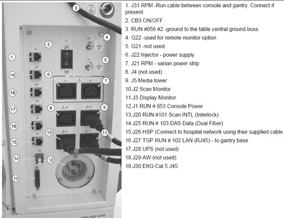
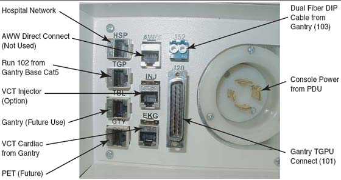

Operating Documentation
Direction 5193574-800, Rev# 22
LightSpeed 7.X Service Methods
Module Version 1.0, Version Date 4/22/10
Operating Documentation |
Broadband is considered the standard network connection for HD.
Broadband connections should use the appropriate ethernet cables for these connections.
The CT system is connected to the network through the Console.
An ethernet cable (not to exceed 10 feet) should be provided by the customer, and it is used to connect the console to a wall box.
Some customer-site units may require cable duct-work or conduit to route connecting network cables to the workstation, camera and console.
The run from the hospital switch to the CT wall outlet must not exceed 290 ft. (88m). Bandwidth performance is degraded when the length reaches 300 ft. (91m) or greater.
Illustration 1: Console Rear Bulkhead

Illustration 2: Console Rear Bulkhead GOC5

The United States network connectivity requirement for this product is broad-band. The US process relies on the Install Specialist to select a Customer Champion and identify an IT contact for the site. Together, those individuals then complete a site assessment to gauge what tasks are needed to fulfill the connection.
Anyone can contact the GE Connectivity team at 800.321.7937, Option #3, with questions.
Provide GE Healthcare Project Manager of Installation with an accurate site address, telephone number, contact name, and e-mail address for the:
Customer Champion
Coordinate VPN activities between Radiology/Cardiology and the Information Technology (IT) departments
Act as a focal point in assuring site broadband infrastructure meets GE Healthcare requirements for connection as determined by a mutual assessment with the GE Healthcare Connectivity team.
IT Contact
Complete an equipment assessment with GE Healthcare Connectivity team to determine site readiness for broadband
Work with the Customer Champion to complete any identified infrastructure changes
Provide IP addresses for new CT equipment
Provide a VPN compatible appliance that will support the IPSec tunneling protocol and 3DES data encryption
To utilize an Internet Service Provider that supports static routing